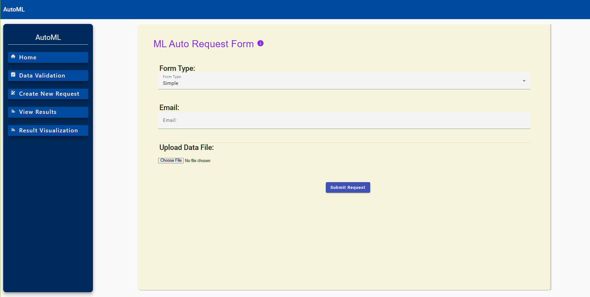
This form will automatically determine the best parameters for the pipeline. New users are recommended to start with this form.
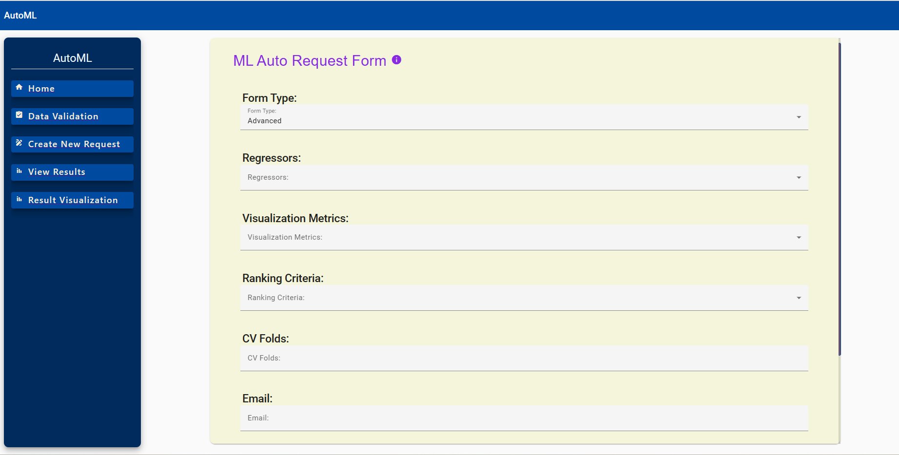
This form can be used to specify the parameters of the model. The parameters are described in the documentation.
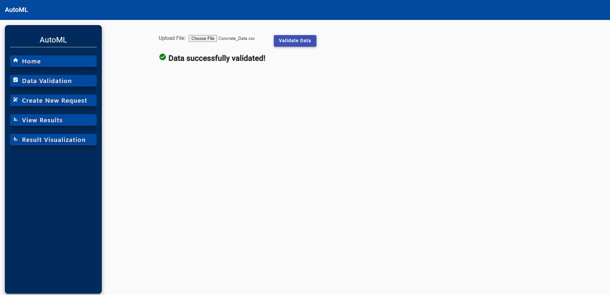
This is a tool to assist the user in determining whether their data is valid for use with this service. The user can upload a CSV file and the service will return a list of errors, if any exist.
After a request is submitted, the user will be presented with this page. The request ID can be saved and used to view the results after the pipeline executes.
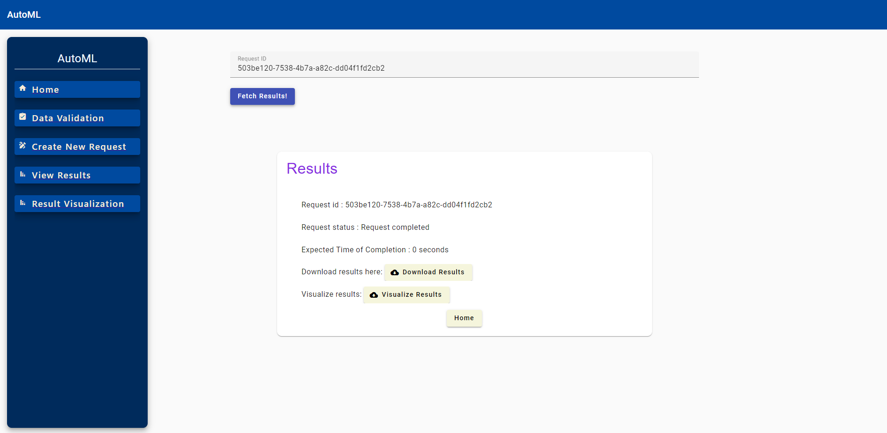
When the service has completed running the pipeline, the user will be presented with this page. The user can choose to view customizable visualizations or download the data for their own use.
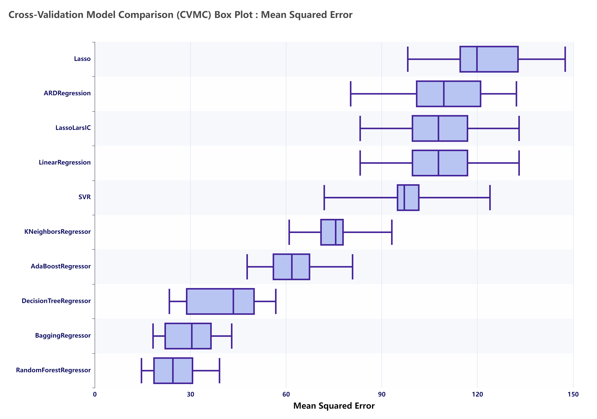
This plot shows the prediction error for each set of k models from the cross validation process. Low values indicate better model fit, and narrower boxes indicate less variance in the model fit.
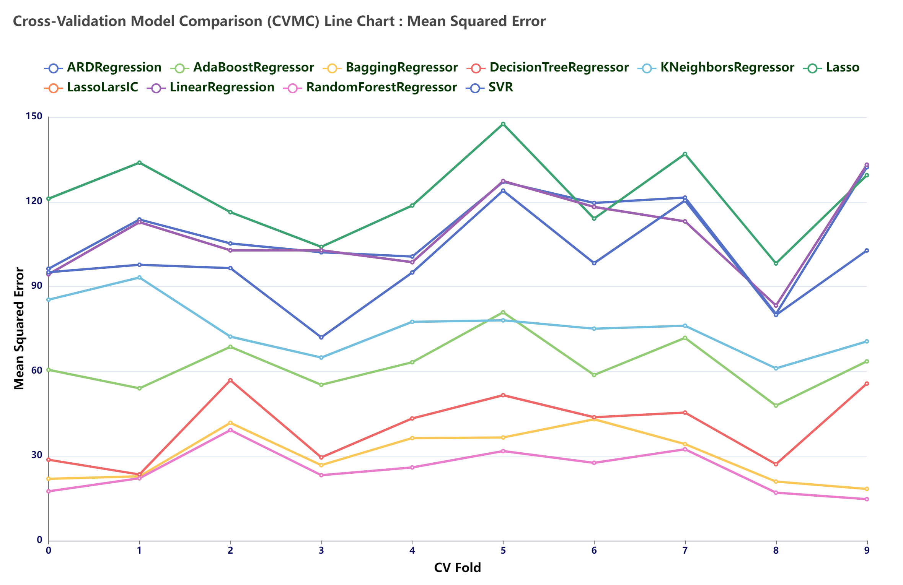
This plot provide an alternative view to the Boxplot figure. The x-axis shows which of the k models the data point corresponds to. The y-axis shows the prediction error for that model. The color of the line indicates which set of k models the data point corresponds to.
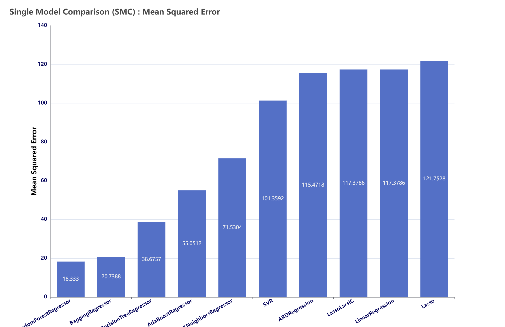
This plot shows the prediction error for the single best (according to the specified 'ranking metric') model from each set of the k models constructed during k-fold cross validation. The model has been used to predict on a held-out set of the data.
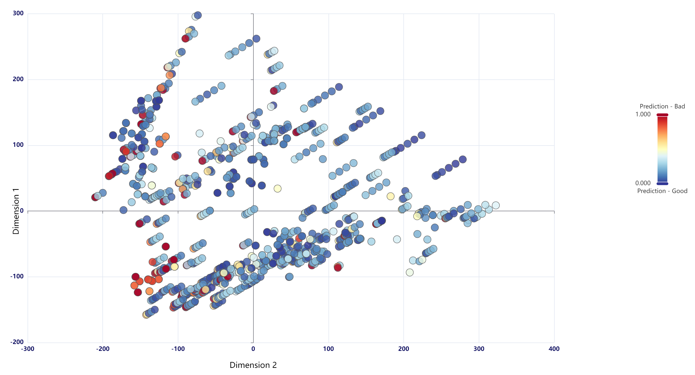
This plot allows the user to determine how well the model performs over different regions of the data. Red points indicate that the model has predicts a point poorly, while blue points indicate the model is accurate for that point. The 2 most important dimensions from Principal Component Analysis (PCA) have been extracted for use in this graph.
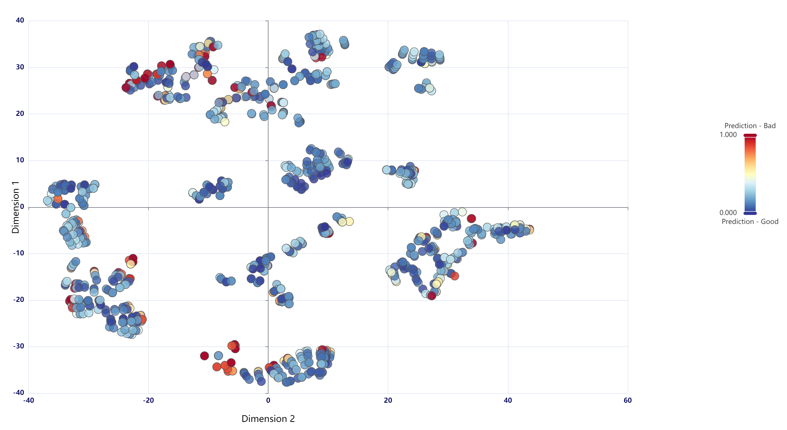
This plot allows the user to determine how well the model performs over different regions of the data. Red points indicate that the model has predicts a point poorly, while blue points indicate the model is accurate for that point. The 2 most important dimensions from t-Distributed Stochastic Neighbor Embedding (t-SNE) have been extracted for use in this graph.

This plot allows the user to determine how well the model performs over different regions of the data. Red points indicate that the model has predicts a point poorly, while blue points indicate the model is accurate for that point. The 2 most important dimensions from Principal Component Analysis (PCA) have been extracted for use in this graph.
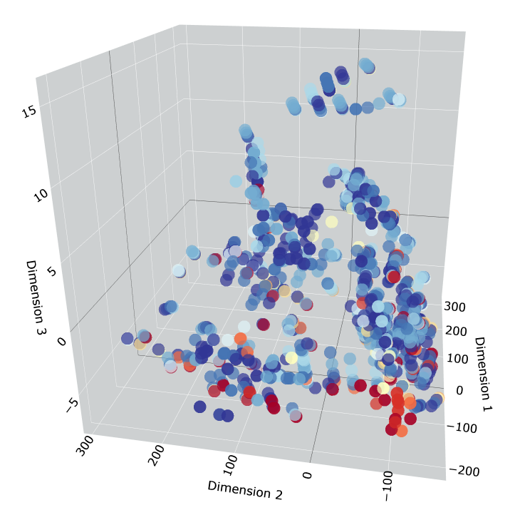
This is an alternate view of the 3D PCA plot.

This plot allows the user to determine how well the model performs over different regions of the data. Red points indicate that the model has predicts a point poorly, while blue points indicate the model is accurate for that point. The 2 most important dimensions from t-Distributed Stochastic Neighbor Embedding (t-SNE) have been extracted for use in this graph.
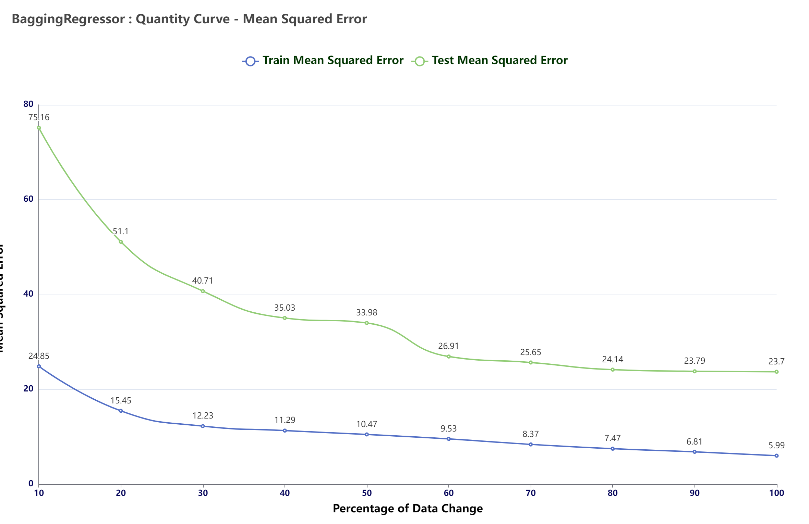
This plot provides the user information about the optimal amount of training data to provide their models. The blue line shows training error, or how well the model predicts its own training data. The green line shows test error, or how well the model predicts data it has not been trained on. The two line will eventually converge, which indicates that the model will not benefit from any more training data.
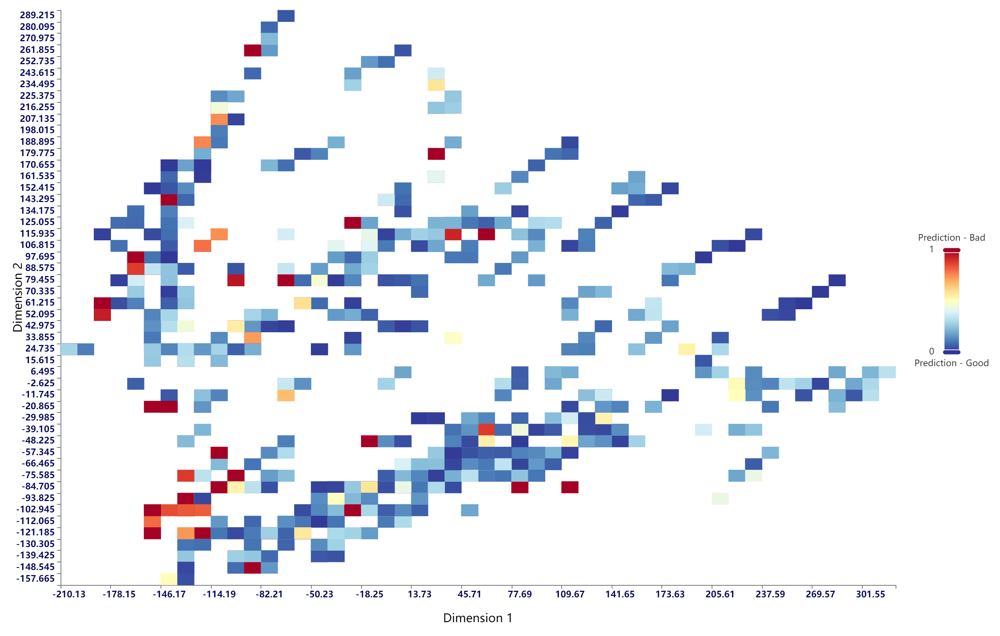
This plot allows the user to determine how well the model performs over different discretized regions of the data. Red points indicate that the model has predicts a point poorly, while blue points indicate the model is accurate for that point. The 2 most important dimensions from Principal Component Analysis (PCA) have been extracted for use in this graph.
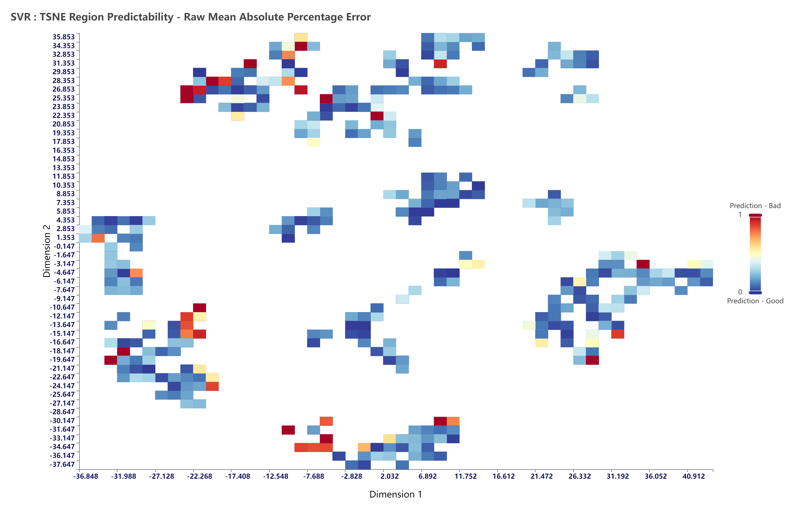
This plot allows the user to determine how well the model performs over different discretized regions of the data. Red points indicate that the model has predicts a point poorly, while blue points indicate the model is accurate for that point. The 2 most important dimensions from t-Distributed Stochastic Neighbor Embedding (t-SNE) have been extracted for use in this graph.